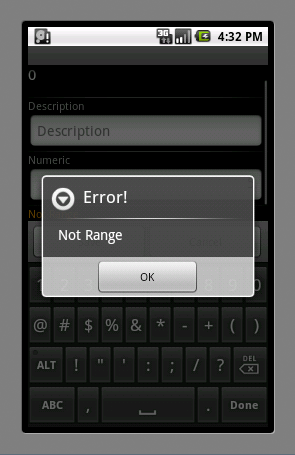
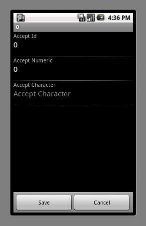
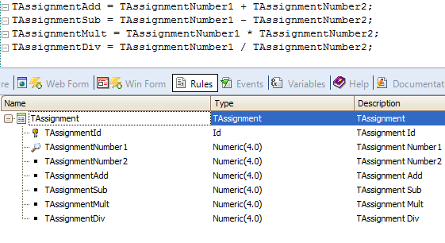
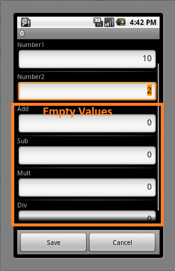
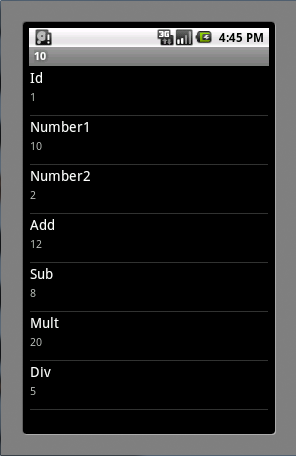
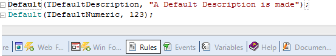
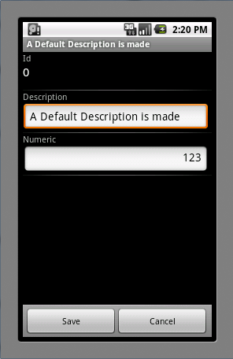
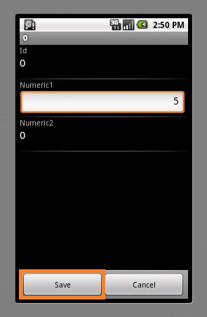
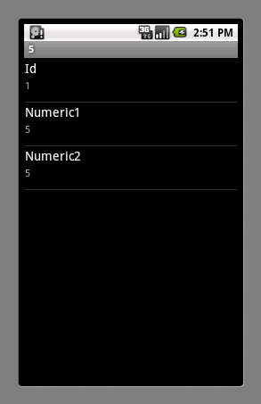

Rules provide a generic language to enforce controls in Transaction programs. This rules can be applied in Work With for Smart Devices as well (remember transactions will be executed as web services business components). Behavior in SDWhen the insert, update or delete actions are executed from the WWSD Detail, is the transaction as business component what is called. So, those transaction rules not involving the web form will be executed, getting messages into the Messages SDT, that are later processed by the Work With in order to show the corresponding information into the Smart Device. For instance: ErrorThis rule is triggered when the user taps "Save" on the Transaction. If the condition of error Rule is true, then a pop-up message like the following will appear.  NoAcceptDisables you to enter a value attribute field, as shown in the image.  This rule assigns values or formulas/expressions to an attribute, for example:   DefaultAssigns a default value to an attribute or variable at Insert time.  As shown in the image below, fields are filled upon executing the insert operation.  AddAdds two attributes if the condition evaluates to true. In the next example below, we have the following rule: "Add(Numeric1,Numeric2);" and, as pictured, numeric2 is disabled. After tapping on "Save", the rule is executed and adds the value from "Numeric1" to "Numeric2".   SubtractSubtracts the value of an attribute from another attribute, depending on a condition. In the example below, we have the rule "Subtract(Numeric1,Numeric2);" and, as pictured, numeric2 is disabled. After tapping "Save" the rule is executed and subtracts the value from "Numeric1" from "Numeric2".
CallCalls a GeneXus object, passing attributes/variables as parameters. Parameters may be attributes, variables or constant values.
|
| Backlinks |
| Work With and Panel for Smart Devices tabs |